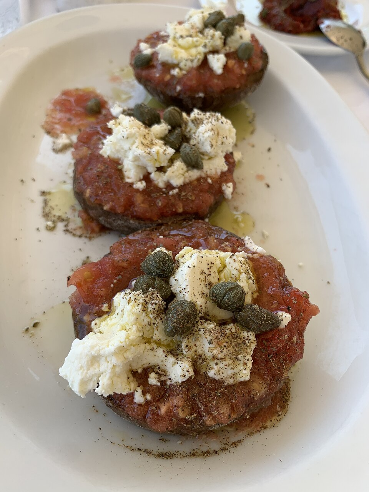
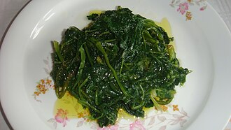
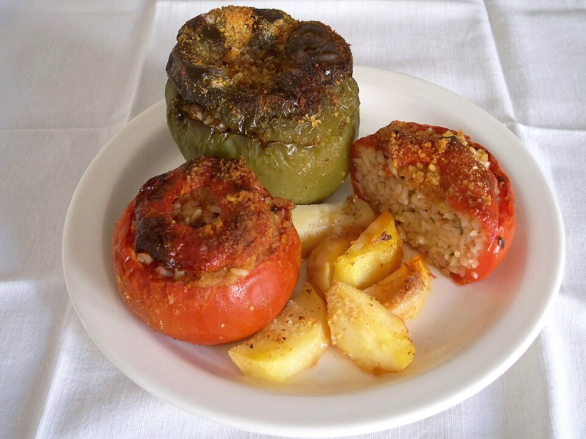
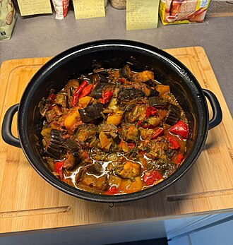
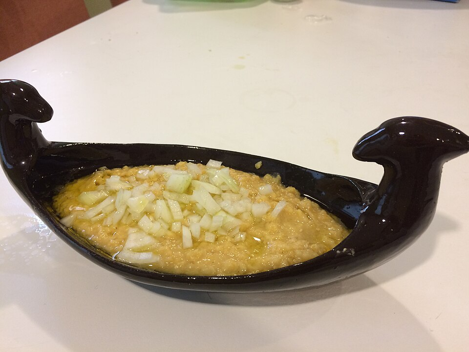
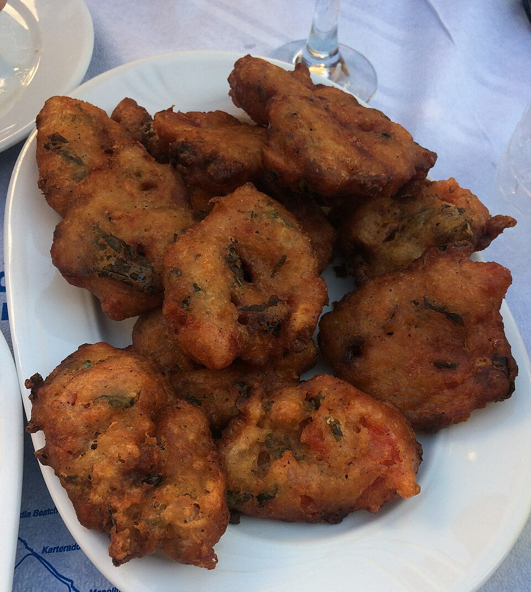

Dakos

{kind=link}
Barley rusk topped with tomato, cheese and olive oil. For a version without bread, ask for a tomato salad instead.
Our shared field notes
Dishes to recognise, music for the road and a doorway to each day’s local recommendations.
Each photograph shows the named dish, not a serving from a recommended restaurant. Recipes vary between kitchens.

Barley rusk topped with tomato, cheese and olive oil. For a version without bread, ask for a tomato salad instead.

Cooked leafy greens with olive oil and lemon: a lovely fresh counterpoint to fish and richer meze.

Tomatoes or peppers stuffed with rice and herbs. Ask whether the filling also contains meat.

Slow oven-baked vegetables with olive oil. A good plate to share alongside fish or legumes.

A silky yellow pulse purée, often served with onion, olive oil and capers; a good local choice in Santorini.

Santorini tomato fritters with herbs. Usually made with flour; ask the kitchen about the preparation.

A thin cheese-filled pie with honey: a regional treat to ask for around Sfakia or Loutro. It contains wheat; consider sharing one for the taste.
Try: “Grilled fish, greens, a vegetable dish and fava to share.” Ask whether fish is floured before grilling or frying, and whether sauces contain flour. Menus and kitchen preparation vary; none of these venues is labelled gluten-free here.
Food background: Visit Greece · Cycladic cuisine Visit Greece · vegetable dishes
A mix of Cretan voices, lyra, contemporary folk and Greek pop. Start gently with Xylouris, explore Psarantonis and Xylouris White, then lift the mood with Marina Satti and Arvanitaki.
Saved in Music Assistant as “Yarden + Adi — Greece 2026”. Open Music Assistant with your usual home / Tailscale connection. The individual Spotify and YouTube Music links below work independently; downloads depend on your music app and subscription.
Start with a voice-led Cretan selection on the drive south. Our listening suggestion: let a few complete songs play before switching to a playlist.
Try a few tracks when you want something rougher and more intense. A good contrast to a polished holiday playlist.
Cretan voice and laouto with drums. Our pick when you want the road-trip soundtrack to become a little more adventurous.
Search for Greek island songs on the ferry or while getting ready in Perissa. This is a listening direction, not a promised live performance at a venue.
These links open searches, not a playlist we have created. Save your favourites in your music app before the drive; the website does not download songs.
{kind=link}
{kind=link}
{kind=link}
{kind=link}
.jpg){kind=link}